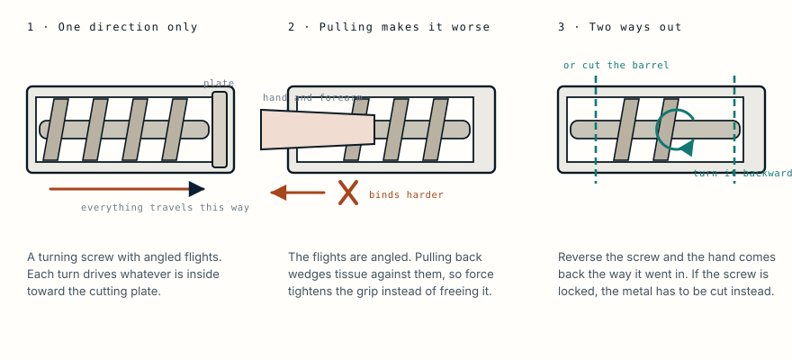

The hand arrived still inside the machine
A 22-year-old was brought to the emergency department with his left hand drawn into a commercial meat grinder, the machine still attached to his arm. Freeing him needed a welder. The decision about what to do next needed something much simpler.
- Specialty
- Hand and reconstructive surgery
- Patient
- Man, 22
- Injury
- Left hand drawn into a commercial meat grinder
- On arrival
- Hand still inside the machine, partly dismantled
- Extrication
- Welder with a cutting torch, in the operating theatre
- Decisive finding
- No bleeding anywhere distal to the wrist
- Procedure
- Disarticulation at the wrist
- Discharge
- One day after surgery
- Afterwards
- Declined both prosthesis and reconstruction
- 0 hthe hand goes in
- arrivalmachine still attached
- theatrea welder is called
- assessmentnothing bleeds
- afterhe declined a prosthesis
The screw only turns one way
A commercial grinder is a screw inside a metal barrel. The screw, called the worm, has angled flights that turn against the wall of the barrel, and every rotation drives whatever is inside it a little further toward the cutting plate at the far end.
It is a very good design for meat and a very bad one for a hand, because it does not distinguish between them and it does not stop.

Why the machine came with him
He arrived at the emergency department with the grinder still on his arm. Somebody had already taken part of it apart where they were, which is the usual first response and rarely enough.
This is not unusual in these injuries. In a review of half a century of published grinder cases, roughly one patient in five arrived at hospital with the machine still attached.
The reason is in the geometry. Pulling backwards against angled flights does not slide the tissue out; it wedges it, so the harder anyone pulls the tighter the grip becomes. The two things that do work are turning the screw backwards, which walks the hand out the way it went in, and cutting the barrel off around it.
A welder in an operating theatre
The screw would not reverse, so the second option was the only one. He was taken to theatre, given a general anaesthetic, and a welder was brought in to cut through the thick metal components with a cutting torch.
That sentence is worth slowing down on, because an operating theatre is close to the worst possible place to strike an arc. Anaesthetic gases are combustible. Oxygen is flowing. Drapes are flammable, and the sparks land on a patient who cannot move away.
Teams that do this describe the same precautions each time: flame-resistant covering over the patient, high-flow oxygen and combustible agents avoided, the cut lines planned away from the limb, and the metal cooled as it is worked. Some centres bring in the fire service instead, who own the tools and cut metal for a living.
The anaesthetic is not only for the cutting. It is for the extraction, which is worse.
The finding that decided it
With the shell off, the hand was crushed throughout. Three long wounds ran across the fingers, the base of the palm and the wrist, spaced to match the flights of the worm. The machine had printed its own geometry into him.
But the injury that decided the operation was not any of that.
Nowhere below the wrist did anything bleed. The bones of the hand were crushed and the tendons were exposed, and the tissue was silent.
Bleeding is the one reliable test of a live blood supply. A surgeon assessing a crushed limb cuts back until the tissue bleeds, because bleeding means circulation and circulation means the tissue can heal, fight infection and receive a drug. Tissue that does not bleed will do none of those things, whatever it looks like.
The same principle runs through several cases here. It is why the surgeons treating a fungal infection at an insulin pump site had to keep operating until they reached tissue that bled, and why an antifungal drip could not reach the tissue that needed it.
What was done, and what he chose
The wound was washed with povidone-iodine and saline, and the hand was disarticulated at the wrist rather than cut through bone. Taking a limb through a joint spares the surgeon from creating a fresh bone surface and generally heals more predictably.
His recovery was uneventful and he went home the next day.
He was followed up closely and declined both a prosthesis and reconstructive surgery.
The paper records that without editorialising, and it is worth leaving it there. A prosthesis is offered, not owed, and a man who has just lost a hand at 22 is entitled to decide for himself how much more surgery he wants to be part of.
Why this keeps happening
Grinder injuries cluster in two groups. One is workers in food processing, usually clearing a blockage or feeding the machine by hand while it runs. The other is children reaching into a domestic grinder at home, and those cases are frequently the worse ones because a small hand travels further before anything stops it.
Across the published cases the right hand is injured more often than the left, because it is more often the dominant one and the one that reaches in. Fingers are the commonest site. Amputation is needed in around one case in ten, and attempts to restore the blood supply succeed only some of the time.
The preventable part is the same in both settings and is unglamorous: the machine has to be switched off and unplugged before a hand goes anywhere near it, and a plunger has to be used instead of fingers. A guard that is removed to make the job faster is the single most common step before one of these injuries.
What this case teaches
The dramatic part of this case is the welder in the operating theatre, and the decisive part is much quieter. A hand can be crushed, degloved and printed with the shape of the machine that did it, and none of that settles whether it can be saved. What settles it is whether the tissue bleeds. Nothing below his wrist did, which meant the hand had no circulation and no prospect of one, and the operation followed from that single observation rather than from how the injury looked.
Adapted from the case described in Grinder Injury of the Hand: A Rare but Devastating Occupational Hazard, published by Thieme in 2021. Background figures on presentation and management are drawn from a systematic review of five decades of published grinder injuries. The details are summarised in the author's own words rather than reproduced, and the clinical photographs from that paper are held by the publisher and are not reproduced here. The diagram is original to MedicaseHub and may be reused freely. This article is not medical advice. Read the full disclaimer.
Related cases
- It does not eat flesh. It cuts off the blood.Her IV antifungals were not working. The answer was to stop relying on the bloodstream entirely.
- Replanting an arm: the clock, and the harder questionSix hours of viability, and a decision about whether to reattach a limb the patient removed himself.
- He stayed at Camp 4 to help another climberGrade 4 frostbite, treatment 66 hours late, and he lost half of two toes.